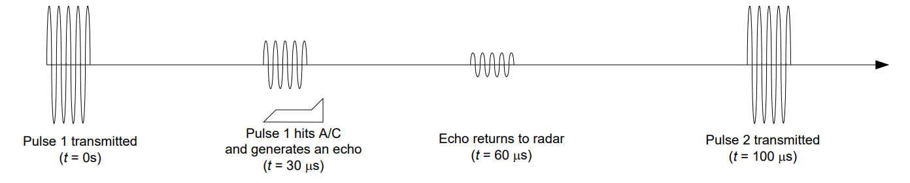
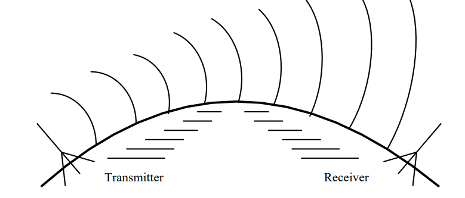

Objective 3.4#
LO# |
Description |
|---|---|
3.4 |
I can calculate the maximum line-of-sight (LOS) distance between two terrestrial objects. |
Communications Introduction#
Today, communication affects our lives in so many different ways. Given the ubiquity of smart phones and other connected devices, we can communicate with anyone at any given time. In the civilian world, we can request an Uber, buy tickets to a Denver Broncos game, or have near-instantaneous communication with someone across the country. In military operations, communication is even more important, as it provides critical information across the battlefield in near-real time. Delivering information using electromagnetic signals from one location to another requires some form of pathway or medium. These pathways can be broadly categorized as either wired (such as a transmission line) or wireless. We call these pathways communication media. Some people refer to them as communications channels, so you may hear these two terms used synonymously. In this lesson, we will first talk about four different communication media, to include wireless, and then discuss four types of wireless radio frequency (RF) propagation methods.
Before discussing communication media, we need to define some common terminology. Every sinusoidal signal has a wavelength, or the distance between two successive crests or troughs in the wave. In communications systems, this distance is typically measured in meters. Wavelength and frequency relate to each other using the following equation:
Where:
λ (lambda) is the wavelength of the signal propagated
c is the speed of light (3.0 x 10^8^ \(\frac{m}{s}\))
f is the frequency of the signal being propagated.
The relationship above shows that the wavelength of a signal gets larger as the frequency gets smaller. Understanding this relationship is critical as we go forward through this block, as communication media and antennas depend on the frequency of the signal being transmitted.
Communication Media#
In general, there are four main types of communication media:
Transmission Lines (wires)
Waveguides
Optical fibers
Wireless
 |
|
Transmission lines (coaxial cable) |
Waveguide |
|
|
Optical Fibers |
Wireless |


Transmission Lines#
The principles governing transmission line behavior of were covered in Block 1. Recall, over long distances, transmission lines had an intrinsic impedance that reduced the efficiency of power transmission. Additionally, transmission lines can only support a limited range of frequencies. Specially designed lines (e.g., coaxial or Ethernet cables) can transmit signals up to a few hundred MHz, but above those frequencies wired transmission lines act like low pass filters.
Despite these drawbacks, transmission lines do have some advantages: 1) they are very reliable, 2) they are easy to repair, and 3) they are relatively secure.
Waveguides#
A waveguide is simply a hollow pipe through which an electromagnetic signal is sent. The internal surfaces of a waveguide are highly reflective allowing for very efficient transmission of the signal. Many waveguides are rectangular in shape, although some are circular. Some microwave ovens use waveguides to convey the energy from the magnetron, which creates the signal, to the cooking chamber. In satellite dishes, waveguides are used to connect the transmitter to the antenna.
The internal dimensions and shape of the waveguide determine which frequencies can be transmitted through it. If the wavelength is too large, the signal will not propagate in the waveguide. For example, high frequency signals have short wavelengths, so they propagate well through a waveguide; however, lower frequencies are blocked because of their long wavelengths. As such, a waveguide acts as a high pass filter. The cutoff frequency of a waveguide can be found using the equation:
In this equation, c is the speed of light and a is the length of the longest side of the waveguide as shown here:
The primary advantage of waveguides is very low attenuation, which is to say the signal does not lose much power as it moves through the waveguide. Disadvantages of waveguides include being heavy, rigid, fairly difficult to repair, and expensive.
Example Problem 1#
A freeway underpass is 8 m tall and 18 m wide. If the underpass acts as a waveguide, will a signal from an AM radio station be able to pass through?
Understand: Next time you’re driving, tune to an AM station before driving under an underpass and see what happens.
Identify Key Information:
Knowns: We know the dimensions of the underpass.
Unknowns: The cutoff frequency of the “waveguide”, which is the freeway.
Assumptions: AM radio stations transmit near 1 MHz. Additionally, we assume the underpass acts like a waveguide.
Plan: Since the freeway underpass acts like a high pass filter, we can use the waveguide equation to find the cutoff frequency and then compare that frequency with the frequency of an AM radio station.
Solve: The waveguide equation is:
Since the cutoff frequency of the underpass “waveguide” is above that of the typical AM radio station, the underpass should prevent any frequencies below 8.33 MHz from passing. Therefore, AM stations will be blocked. FM stations, on the other hand, transmit near 100 MHz, and the FM signals can be received under the same underpass.
Optical Fibers#
Optical fibers act like waveguides for beams of light, which are very high frequency signals. The light signal itself is most often a laser beam, modulated by the information that is being sent. When transmitting light in an optical fiber, the light beam bounces off the sides of the glass fiber as it travels at the speed of light. Optical fibers allow for very large bandwidths, and even allow multiple signals (different “colors” of light) to be transmitted on the same fiber. Additionally, the fibers are flexible and are relatively inexpensive (especially when considering cost per bandwidth). Finally, optical fibers have relatively low loss per unit distance.
The primary disadvantage of optical fibers is that they are very difficult to install and repair. Fibers must be entirely replaced, or spliced using complex equipment. Splicing optical fibers results in the introduction of additional loss into the fiber. For example, the F-22 uses optical fiber to implement its “fly-by-light” system, but maintaining the cabling can be a nightmare for the crews, especially when donned in CBRNE gear.
Wireless#
Wireless communications use the electromagnetic spectrum to transmit and receive information without the use of wires, waveguides, or other conductors. Typically, a wireless signal is transmitted from an antenna, then it travels through free space until it is acquired by the receiving antenna. This is exactly what happens every time you use your cell phone. Even though radio frequencies and antennas are commonly associated with wireless communications, laser beams can also be used to communicate. A great example of this is the Lunar Laser Communications Demonstration (LLCD) developed by MIT Lincoln Laboratory. The LLCD used lasers to successfully transmit at a data rate of 622 Mbps from lunar orbit to Earth!
The primary advantages of using wireless communications are flexibility and cost. Wireless communications can be used virtually anywhere, as long as the transmitter and receiver have the required equipment. There is no need to install or repair wires over long distances, so they are relatively cheap to use and maintain.
The primary disadvantages of wireless communications are that they have limited bandwidth and are not as reliable as the other communications media. As we discussed earlier in this class, the radio frequency spectrum in the United States is full, meaning there is no more bandwidth available at radio frequencies for wireless communications. Additionally, wireless communications are not as reliable as the other communications media. For example, satellite TV, which uses wireless communications, can lose service during severe storms whereas cable TV, a transmission line, does not. Despite these disadvantages, wireless communications are widely used in today’s world, and for that reason, various wireless communications will be the focus of the rest of this block.
Wireless Communications#
Imagine this scenario: you are stranded behind enemy lines, a few kilometers from the smoking remains of your airplane. From intelligence briefs received before the mission, you know you’re in a safe area, with only a very slight chance of capture. Still, you find a reasonably sheltered spot and pull out your survival radio, hoping to contact a rescue helicopter.
In order to communicate with the helicopter, you will need to communicate wirelessly. In your situation, though, how does it work? To be successful, you will need to understand how wireless communications work and what factors affect your communication system’s performance.
Radio Frequency (RF) Spectrum#
The lower end of the electromagnetic spectrum, called the RF spectrum, is subdivided into eight bands spanning from 3 kHz to 300 GHz. Each band has a name, as shown in Figure 1. Civilian applications, such as commercial AM and FM radio, television, cellular telephony, civilian aviation navigation, and air traffic control frequencies are found in this portion of the electromagnetic spectrum. These bands are also used in many military applications: global positioning system (GPS); RADAR; munitions guidance and fusing systems; strategic and tactical communications systems; and intelligence, surveillance, and reconnaissance (ISR) systems.

Figure 1: The RF spectrum.
RF Propagation methods#
There are four different kinds of wireless RF propagation methods. They are:
Direct or line-of-sight (LOS)
Surface wave
Sky wave
Forward scatter
Each of these pathways involves a propagation path. Since it is possible for a signal to be transmitted over several paths simultaneously, this may cause interference. However, some of the pathways only work for certain bands within the RF spectrum.
Line-of-sight (LOS) Propagation: All electromagnetic energy (to include all the RF bands) will propagate by LOS. If you, the transmitter, are in view of the receiver, then line-of-sight is established, thus the name. In practice, this means that if nothing can obstruct the waves traveling directly between the transmitter and receiver, then line-of-sight propagation can occur. As shown in Figure 2, LOS communications on the earth are limited by the curvature of the earth and the heights of transmitting and receiving antennas. Of course, transmitter power is also a limiting factor. The signal transmitted from point T reaches the receiving antennas R1 and R2. However, R3 is not in the LOS path of the signal and cannot receive any of the radio’s energy. For communication and telemetry between earth and space vehicles, LOS propagation is used. At short distance, secure military communications commonly occur through LOS microwave links. Some telephone company “trunks” and cell phone towers also use LOS.

Figure 2: Line-of-sight (LOS) propagation between several repeater stations.
Surface Wave Propagation: In surface wave propagation, the radio wave travels from the transmitting antenna to the receiving antenna along the surface of the earth. This wave essentially diffracts around the surface of the earth, so you can reach distances greater than LOS. In this waveguiding process, minute eddy currents are induced in the ground directly beneath the surface wave. Although the ground is a fairly good conductor, it does have some resistance and the energy required for these currents to flow is absorbed from the wave. This in turn limits how far the wave can effectively travel.
As frequency increases, losses due to the conductivity of the ground also increase and greatly attenuate the surface wave. This means surface waves cannot travel as far at higher frequencies. Surface waves are very effective for signal propagation in the VLF and LF bands. However, near the MF band, this effectiveness decreases rapidly. Surface waves are not generally useful above about 3 MHz. Commercial AM broadcasting stations typically use surface waves to transmit their signals - this is one of the main reasons AM radio signals can travel much further than FM radio signals.

Figure 3: Surface wave propagation.
Sky Wave Propagation: Radio energy reflected or refracted from the ionosphere back to Earth is known as a sky wave. To understand how the ionosphere affects radio waves of different frequencies, think of the ionosphere as a huge mesh sieve surrounding the earth. Whether or not a wave passes through this sieve depends partially upon the relative dimensions of the wavelength and of the mesh openings. Therefore, radio energy with a long wavelength (low frequency) is more likely to be reflected back to Earth than that with a short wavelength (high frequency), which will pass through the mesh. In addition to frequency, the angle of incidence, β in Figure 4 below, plays a role in determine if the radio energy will be reflected back to Earth.

Figure 4: Sky wave propagation.
In general, the larger the angle, β, the greater the probability the wave will be reflected. However, if β is too large, the layers of the ionosphere will act like a waveguide and the wave will effectively remain in the ionosphere and not be returned to Earth. As with the other wireless RF propagation methods, there is often a tradeoff between this angle of incidence and frequency. That is, for a given angle, there is some maximum frequency that can be used for sky wave propagation. Likewise, for a given frequency (within certain limits), there is some maximum angle that will produce a sky wave.
Maximum usable frequencies usually lie in the HF band; waves whose frequencies are above this are refracted slightly by the ionosphere but propagate through it. A peculiarity of the ionosphere is that its lower layers readily absorb energy in the MF band. Thus, sky waves in this band are possible only at night when the lower ionospheric layers are less dense. Narrowband long haul communications are often conducted in the HF band via sky wave.
Sky wave propagation has a significant limitation. At the point where a sky wave returns to Earth, you can detect a very strong signal. However, between this point and the transmitter, there is essentially no energy from the sky wave at all. The distance between the transmitting antenna to the spot where the reflected wave strikes the earth is called the skip distance. At all locations less than the skip distance from the transmitting antenna, none of the sky wave signal is received. Therefore, the only way to communicate at points less than the skip distance is through LOS or surface wave communications.
In the HF band, where surface wave propagation is somewhat less than 200 miles, there is often a considerable distance in which essentially no radiated energy from either the surface wave or the sky wave is present and no communication is possible. This region is called the quiet zone. Figure 5 below illustrates the concepts of skip distance and quiet zone.

Figure 5: Skip Distance and Quite Zone.
Forward Scatter Propagation: When a radiated signal strikes the discontinuous “blobs” of air in the troposphere, it is scattered in various directions. Some of this scattering is in the forward direction, and the resulting radio signal, although relatively weak, can be received at a point that is beyond the horizon from the transmitter. Most of the Air Force’s non-satellite wideband long haul communications use forward scatter (with carriers in the 300 to 400 MHz range).
Although the scatter is dependent upon atmospheric conditions, it is possible to achieve reliable communications using high-power transmitters and sensitive receivers. Tropospheric forward scatter is effective in the VHF, UHF, and SHF bands. These tropo links use large rectangular “billboard” antennas and typically transmit about 100 kW of power. Before satellite communication became prevalent, much in-theater military communication was accomplished using this type of propagation.

Figure 6: Forward scatter propagation.
Range and Bandwidth Considerations#
At higher carrier frequencies, more bandwidth is available for use. As a rough estimate, the available bandwidth for a signal is about 1% of the carrier frequency.
AM radio stations, operating around 1 MHz, only have 10 kHz of bandwidth available. Fiber optics, however, use beams of light with carrier frequencies on the order of 100 THz (100 trillion cycles per second). These light beams have available bandwidths up to 1 THz. In other words, we can transmit approximately 100 Million times more information over a light beam than we can over a radio signal.
Unfortunately, the transmission range of signals also depends on the frequency. AM radio stations can easily transmit signals hundreds of miles, and as said earlier, these signals can even follow the curvature of the earth to reach beyond line of sight (surface waves). Light beams, on the other hand, are quickly attenuated by atmospheric effects. In order to overcome this limitation while still reaping the benefits of the huge bandwidth available in beams of light, optical fibers are generally used. We’ll discuss how frequency affects a signal’s range in more depth in future lessons.
RF Summary#
Let’s quickly summarize which types of wireless communication pathways are used by different radio frequency bands. This information is identified below in Figure 7. The ITU (International Telegraphic Union) designation of frequency bands (e.g., VHF, UHF) and the frequency ranges for some of the more common uses of radio waves are indicated. Since the transmitted signal in a communication system usually has a relatively narrow bandwidth, the propagation characteristics are determined almost exclusively by the carrier frequency. This figure also summarizes which radio frequencies are best suited to the four primary pathways that radio frequency waves propagate through the air and space: direct or line-of-sight (LOS), surface wave, sky wave, and forward scatter.

Figure 7: The RF spectrum and the associated wireless RF propagation methods.
VLF and LF (Very Low Frequencies and Low Frequencies): At these lower frequencies, surface waves are attenuated very little and may be used for signal propagation of a thousand miles or more. This maximum distance gradually decreases with increasing frequency and is about 400 miles at 300 kHz. The sky wave does exhibit slight fluctuations with changes in the ionosphere, but it is still fairly reliable. Sky waves can be used for communication over distances from about 500 to 8000 miles in the LF band. In the VLF range, the combination of the surface and sky wave mechanisms make worldwide signal propagation possible with radiated power levels of about 1 MW.
MF (Medium Frequencies): In this band, the maximum distance for surface wave propagation varies from about 400 miles at 300 kHz to about 200 miles at 3MHz. Ionospheric absorption of electromagnetic energy in this band (maximum absorption occurs at 1.4 MHz) makes sky wave propagation impossible during the day. At night, sky waves furnish reception at distances from about 100 to 3000 miles.
HF (High Frequencies): The attenuation of surface waves above about 3 MHz is so great that the surface wave is effectively of no use for communication in this band. Sky waves are used extensively, and their behavior is mostly governed by ionospheric conditions. Although sky wave propagation is not always reliable, it is possible over distances of 12,000 miles and more. For distances such as this, frequencies from 5 to 20 MHz have proven most effective. Many military aircraft have HF radios onboard used for long-range communication. Also, amateur radio (ham radio) operates primarily in this part of the spectrum. Amateur radio is primarily used by hobbyists who are interested in RF communications.
VHF (Very High Frequencies): Although sky waves may occur at lower VHF frequencies, their reliability is so poor in the VHF band that they are virtually useless for communication. The predominant form of propagation in this band is line-of-sight. The effectiveness of forward scatter becomes increasingly important as frequencies reach 50 MHz and above.
UHF and SHF (Ultra High Frequency and Super High Frequency): Line-of-sight propagation is widely used at these frequencies since excellent low-noise reception is possible. Ranges of a few hundred miles can be realized up to about 10 GHz. Most forward scatter applications use frequencies well below this. Many space assets use this frequency band for communications.
EHF (Extremely High Frequency): Line-of-sight is the only propagation method used with EHF. Radio waves at these frequencies attenuate quickly in many uses, such as RADAR and wireless communications, so range is limited for these frequencies. Additionally, the atmosphere absorbs energy from waves, further attenuating them while in the atmosphere. However, EHF is still used. Each satellite in the Advanced Extremely High Frequency (AEHF) satellite constellation uses EHF for uplink communications. Additionally, 5G cellular networks will use frequencies in the lower portion of the EHF band. Specifically, Verizon has stated that they use 28 GHz (SHF) and 39 GHz (EHF) for their 5G network.
Line-of-sight Communications#
Returning to our original question, “What kind of wireless RF propagation method would you use between you and a rescue helicopter?” Realistically, you’ll most likely find yourself trying to establish a LOS link. A survival radio does not have the power required to use the more specialized forms of wireless communications (surface waves, sky waves, and forward scatter). In LOS, the key to establishing communications is actually being able to “see” the helicopter and having enough transmission power.
Obviously, there are a number of variables associated with determining the LOS between you and the helicopter. Are you on a hill or in a valley? How high is the hill? Is the terrain flat or bumpy? How high is the helicopter?
If we assume the terrain is relatively flat, we can use a simple equation to give us a good idea of how far the helicopter (or anything else) can see. Consider an antenna sitting at height, h, above sea level. The maximum range, r, between transmit and receive antennas is calculated as the distance from the transmit antenna to the point that is tangential to the surface of the earth as shown in Figure 8.

Figure 8: Line-of-sight communication range.
Since \(R_{e}\) and r make two sides of a right triangle, with (\(R_{e}\) + h) as the hypotenuse, we can use the Pythagorean theorem (\(a^{2} + b^{2} = c^{2}\)) to find:
For terrestrial and even some airborne applications (i.e., non-space), we can assume that \(R_{e}\) is much greater than the antenna height (\(R_{e} \gg h)\), so the \(h^{2}\) can safely be ignored. This results in a maximum LOS range equation of:
Furthermore, the radius of the Earth is adjusted to account for atmospheric effects (decreasing atmospheric pressure helps bend radio waves downward thus increasing range). The resultant radius is increased from 3960 miles to 5280 miles, using the common 4/3 radius model. Coincidentally, there are 5280 feet in a mile. As a result, we can employ a “mixed units” equation, entering the antenna height (h) in feet to find the range in miles. This makes our LOS equation:
In this equation, h is the height (in feet) of the observer, and r is the distance (in miles) the observer can see before the horizon gets in the way. Notice this is an “improper” equation, which is to say the units don’t match - if we take the square root of feet, we should not end up with miles. As engineers, we’re willing to overlook this discrepancy and use this improper equation because it is useful, and its derivation produces a mathematically logical result.
Example Problem 2#
A helicopter is searching for a downed airman from 2000 feet AGL (above ground level). Assuming relatively flat terrain, how close will it have to get to the airman before it can establish line-of-sight?
Understand: Military survival radios require line-of-sight to communicate, so we need to calculate the maximum LOS distance.
Identify Key Information:
Knowns: We know the height of the CSAR helicopter.
Unknowns: The maximum line of sight distance.

Assumptions: We assume the terrain is flat (mountains cause significant problems).
Plan: We will use the LOS equation to solve for the maximum LOS distance.
Solve: We know the helicopter is 2000 feet above the earth. Plugging this into the LOS equation gives:
Recall, we put feet into the equation and the answer will be given in miles.
Answer: At 2000 feet AGL, the helicopter can see for approximately 63.25 miles. Therefore, it needs to be within 63.25 miles to see an airman on the ground.
Example Problem 3#
The helicopter in the previous example is still flying at 2000 feet AGL. If the airman climbed to the top of a 50-foot tall hill, how far away could the helicopter establish line-of-sight?
Understand: We have to use the LOS equation twice because the airman has raised himself above the surface, as shown below.

Identify Key Information:
Knowns: We know the height of both the helicopter and the stranded airman.
Unknowns: The maximum LOS distance.
Assumptions: The terrain is flat and no mountains are in the way.
Plan: Recall, we are trying to determine the maximum distance the helicopter can see the airman. As the picture above hopefully shows, this occurs when the airman climbs high enough to just barely be in the helicopter’s line-of-sight. At this point, the helicopter will see the airman on the horizon, not even knowing the airman is standing on a hill (since the hill is below the helicopter’s horizon). From the point of view of the airman, the helicopter will also appear right at the horizon. Calculating this maximum LOS distance is very straightforward. We first figure out how far the horizon is from the helicopter, and then, we figure out how far the horizon is from the airman. If we add these two distances, we get the maximum distance they can see each other.
Solve: We already calculated the distance from the helicopter to the horizon in the previous problem. It is 63.25 miles. Since the airman is on a 50-foot hill, the distance for him to the horizon is:
Adding these distances together gives us our answer:
Answer: The airman and the helicopter now have a maximum LOS distance of 73.25 miles, which is 10 miles farther than before.